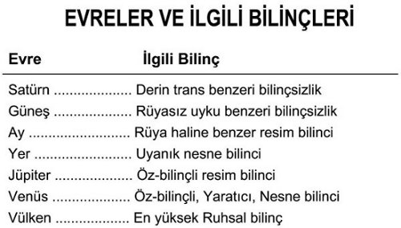

1333) Beyaz yılan ise insanlığın, Yer Evresi’nin Merkür yarısında ve Jüpiter, Venüs ve Vülken Evre’lerinde katedeceği yolu gösterir. Bu yolculukta da insan bilinci, her şeyi bilen bir Yaratıcı Varlık olacaktır.
1334) Yılan yolu, büyük çoğunluk tarafından takip edilen yoldur. Fakat etrafında yılanların dolandığı “Merkür Âsası”, “düz ve dar yolu”, yani İnisiyasyon yolunu gösterir. Bu yol, kendisini takip edenleri, insanların çoğunun milyonlarca yıla ihtiyaç duydukları şeye birkaç yaşamda erişebilmeyi sağlar.
1335) İnisiyasyon âyinlerinin açıklamasının verilemeyeceğini söylemeye herhalde pek gerek yoktur. İnisiye kişinin ilk andı susmaktır. Fakat konuşmaya izin verilmiş olsaydı da, bu mesele bizim için önemli olmazdı. Evrim yoluna kuş bakışı bakarsak âyinlerin sonuçlarını tespit etmenin bizim ödevimiz olduğunu görürüz.
1336) İnisiyasyonların tüm sonucu, ruhsal tâliplere daha yüksek yeteneklerini ve güçlerini kısa zamanda katı eğitimlerle geliştirmek için bir fırsat vermek ve böylece tüm insanlığın en sonunda mutlaka sahip olacağı bilinç genişlemesini onun için şimdiden sağlamaktır. Fakat büyük çoğunluk, bilinç genişlemesini normal evrimin yavaş süreci boyunca edinmeyi seçer. Tâlip, birbiri ardınca başarılı büyük İnisiyasyonlardan geçtikçe, ulaştığı bilinç hallerini ve o hallere eşlik eden güçleri bilebilir. Doğal olarak bilmeliyiz ki, gelecekteki bu haller ve güçler, ileride herkesin sahip olacağı güçler olacaktır. Birkaç ipucu önceden verildi ve birkaçı daha Uygunluklar (Correspondences) yasası uygulanarak hepimizin gelecekte yaşayacağı evrimin oldukça genel bir resmini vermek ve İnisiyasyonda büyük adımların önemini göstermek için mantıksal olarak çıkarılabilir. Burada, insan bilincinin çeşitli Evrelerden geçerken kaydettiği gelişiminde attığı adımlara bir göz atmak faydalı olacaktır.
1337) Satürn Evresi’nde insan bilinçsizliğinin, yoğun bedenin en derin trans haline sokulduğu durumdaki bilinçsizliği gibi olduğunu hatırlayalım. Bunu Güneş Evresi’nde uykusuz-rüya bilinci takip etti. Ay Evresi’nde, dıştaki şeylerin içsel resimleri aracılığıyla ilk uyanış pırıltıları kendini gösterdi. Tüm bilinç, dış şeylerin, renklerin ya da seslerin bu şekilde içsel resimlerinden oluşuyordu. Atlantis Çağı’nın ikinci yarısında bu resim-bilinci nihayet, şimdiki tam uyanık-bilinç ile değiştirildi. Şimdi insan, nesneleri boşlukta kaba hatlarıyla açık ve birbirlerinden ayrı olarak algılayabiliyordu. Bu nesnel-bilince sahip olduğunda insan, bir dış dünyanın farkına vardı ve ilk defa “kendi” ve “diğerleri” arasındaki farkı tamamiyle anladı. O, bundan sonra ayrı olduğunu fark etti ve o zamandan beri onun için en önemli şey “Ben” bilinci, yani bencillik oldu. O zamana dek bir dış dünya ile ilgili olan düşünceler veya fikirler yoktu, Bu yüzden olayların anısı diye bir şey de yoktu.
1338) İçsel resim bilincinden nesnel-öz-bilince geçiş, onun önemiyle orantılı olarak çok yavaş bir süreçte etkili oldu. Bu süreç, Ay Evresi’nin 3. Devrinde C Küre’sindeki varoluştan Atlantis Çağı’nın ikinci yarısına dek devam etti.
1339) Bu zaman boyunca gelişen yaşam, insan aşamasına erişmeden önce dört büyük hayvan-benzeri gelişim aşamasından geçti. Geçmişin bu adımları, dört inisiyasyona ve daha önceden geçilmiş dört aşamaya karşılık geliyordu.
1340) Önceden geçilmiş olan bu dört bilinç aşamasının içinde toplam olarak 13 adım vardır. Şimdiki durumundan son Büyük İnisiyasyon’a erişinceye kadar da insanın önünde 13 İnisiyasyon vardır. Bunlardan dokuzu küçük Sırlar aşaması ve diğerleri de dört büyük İnisiyasyon’dur.
1341) Bizim şimdiki hayvan âleminde de Form aracılığıyla takip edilebilecek benzer bir bölünme vardır. Form, yaşamın ifadesi olduğu için doğal olarak gelişiminin her adımı, bilinç genişlemesinin bir adımına karşılık gelir.
1342) Hayvan krallığını (Hayvanlar Âlemi) dört büyük ana sınıfa ayıran ilk kişi Cuvier’di. Ancak o, bu ana sınıfların alt bölmelendirmesinde o kadar başarılı değildi. Embriyolog Karl Ernst von Baer, Profesör Agassiz ve diğer bilimadamları hayvan krallığını aşağıdaki gibi dört ana sınıfa ve onüç altsınıfa ayırmaktadır:
1343) İlk üç bölüm, Yer Evresi’nin Merkür yarısındaki kalan üç Devir’e karşılık gelir. Onun dokuz basamağı da küçük Sırların, insanlığın geneli tarafından Yer Evresi’nin son Devrine ulaşıldığında erişilecek olan dokuz derecesine karşılık gelir.
1344) Hayvan krallığının dördüncü bölümü dört alt-bölüme sahiptir: Balıklar, Sürüngenler, Kuşlar ve Memeliler. Bilinçteki bu şekilde gösterilmiş adımlar; insanlığın Yer, Jüpiter, Venüs ve Vülken Evre’lerinde erişeceği ve şimdi de vasıflı her insanın inisiyasyonla erişebileceği gelişim aşamalarına karşılık gelirler. Büyük İnisiyasyonlardan ilki, sıradan insanlık tarafından Yer Evresi’nin sonunda edinilebilecek olan bilinç aşamasını verir. İkincisi, Jüpiter Evresi’nin sonunda edinilebilecek olan bilinç aşamasını; üçüncüsü ise Venüs Evresi’nin sonunda edinilebilecek olan bilinç genişlemesini; dördüncü ve sonuncusu da çoğunluğun ancak Vülken Evresi’nin sonunda ulaşabileceği Gücü ve Her şeyi Bilme’yi inisiye kişiye verir.
1345) Kendisi sayesinde dış dünyanın bilgisine sahip olduğumuz Nesnel Bilinç (Objective-Consciousness), bizim duyularımız aracılığıyla algıladıklarımıza bağlıdır. Bunu biz, bize içsel bilincimiz aracılığıyla gelen düşüncelerin ve fikirlerin zıttı olarak “gerçek” diye adlandırıyoruz. Bu düşüncelerin ve fikirlerin gerçeklikleri bizim için, bir kitabın, bir masanın veya uzayda görülebilir ve elle tutulabilir herhangi bir şeyin gerçekliği kadar açık ve belli değildir. Düşünceler ve fikirler bize bulanık ve hayali olarak görünürler. Bu yüzden “sadece” bir düşünceden veya “sadece” bir fikirden bahsederiz.
1346) Ancak günümüzün fikirleri ve düşünceleri de bir evrime sahiptir. Onlar için de şimdi dış dünyanın, fiziksel duyularımız aracılığıyla algıladığımız herhangi bir nesnesi gibi gerçek, açık ve somut olmaları amaçlanmıştır. Zamanımızda bir şeyin veya bir rengin, hafıza tarafından içsel bilincimize sunulan resmi, gerçekliğin sadece bulanık ve gölgeli bir yansımasıdır.
1347) Jüpiter Evresi’nin başlangıcıyla birlikte bu açıdan belirgin bir değişiklik meydana gelecektir. Zira Ay Evresi’nin rüya-resimleri geri gelecekler, fakat bu defa düşünenin çağrısına itaat edecekler ve sadece dış nesnelerin birer kopyası olmayacaklardır. Böylece Ay Evresi’ndeki resimler ile Yer Evresi’nde bilinçli olarak geliştirilen düşünce ve fikirlerin bir kombinasyonu meydana gelecektir. Yani bir öz-bilinçli resim-bilinci sahibi olacağız.
1348) Jüpiter Evresi’nin insanı “kırmızı” dediğinde veya bir şeyin ismini söylediğinde, onun kırmızının düşündüğü tonunun tam bir kopyası meydana gelir veya düşündüğü şey, onun içsel vizyonuna sunulur. Bu şey aynı zamanda belirtilen kişiyi duyanlar tarafından açıkça görülebilecektir. Konuşulan sözcüklerin yanlış anlaşılması artık olmayacaktır. Düşünceler ve fikirler canlı ve görünür olacaklar, bu yüzden ikiyüzlülük ve dalkavukluk tamamen ortadan kalkacaktır. İnsanlar, oldukları gibi görüneceklerdir. Hem iyi, hem de kötü insanlar olacak, ancak bu iki özellik bir insanda karışmayacak. Her iki türden de insanlar varolacaktır: tamamen iyi insanlar ve tamamen kötü insanlar. Bu zamanın en önemli sorunlarından biri de bu tamamen kötü insanların nasıl üstesinden gelineceği olacaktır. Ruhsallıkta Gülhaçcı’lardan daha yüksek bir tarikat olan Maniche’ler daha şimdiden bu problemle ilgilenmektedirler. İstenilen duruma ilişkin bir fikir, efsanelerinin kısa bir özetinden kazanılabilir. (Tüm mistik tarikatların, idealleri ve amaçları için simgesel bir efsaneleri vardır.)

Şekil 15B
1349) Maniche’lerin efsanesinde iki krallık vardır: Işık-cüceleri ve Gece-cüceleri. Gece-cüceleri, Işık-cücelerine saldırır, ancak onların yenilgiye uğratılıp cezalandırılmaları gerekir. Fakat Gece cüceleri tamamen kötü olduğu gibi Işık cüceleri de tamamen iyi oldukları için düşmanlarına herhangi bir kötülük yapamazlar. Bu yüzden onları “iyilik” ile cezalandırmaları gerekmektedir. Bu yüzden ışık-cücelerinin krallıklarının bir kısmını Gece-cücelerinin krallığına katarlar. Bu yolla da kötü, zamanla bertaraf edilecektir. Nefret nefrete boyun eğmez, ancak onu Sevgi yenmelidir.
1350) Ay Evresi’nin içsel resimleri, insanın dış çevresinin belli bir ifadesiydi. Jüpiter Evresi’nde ise resimler içeriden tezahür edecektir. Bu resimler, insanın içsel yaşamının bir sonucu olacaktır. O aynı zamanda Yer Evresi’nde edindiği, şeyleri kendisinin dışında ve dışarıdan görme yetisine de sahip olacaktır. Ay Evresi’nde o, somut şeyleri değil, sadece bu şeylerin ruhsal özelliklerini görebiliyordu. Jüpiter Evresi’nde her ikisini birden görebilecek ve böylelikle tam bir algıya ve çevresinin tam bir anlayışına sahip olacaktır. Aynı Evre’nin sonraki bir aşamasında bu algılama yeteneğini daha da yüksek bir durum takip edecektir. Renklerin, Seslerin ve Şeylerin açık ruhsal düşüncelerini biçimlendirme gücü ona, çeşitli hiyerarşilerden duyularüstü varlıklarla iletişim kurmasına, onları etkilemesine, onların kendisine itaat etmelerine ve onların güçlerini istediği gibi kullanmasına olanak sağlayacaktır. O, niyetlerini gerçekleştirmek için kendisinden dışarıya güçlerini gönderemeyecek, ancak kendi hizmetinde olan bu varlıkların yardımına bağlı olacaktır.
1351) Venüs Evresi’nin sonunda resimlerine kendi gücünden yaşam verme yetisine sahip olacak ve onları kendisi dışındaki şeyler olarak uzaya koyacaktır. O, bundan sonra Nesnel, Öz-bilinçli, Yaratıcı-Bilinç sahibi olacaktır.
1352) Venüs Evresi’nin sonunda elde edilecek olan Yüksek ruhsal bilinç ile ilgili olarak çok az şey söylenebilir. Bu bilinç, şimdiki anlayışımızın çok ötesindedir.
Spiraller İçinde Spiraller
1353) Bu bilinç hallerinin, ait oldukları Evre’nin başlangıcıyla birlikte başladığı ve Evre’nin bitimiyle sona erdikleri sanılmamalıdır. Her zaman Tekrarlamalar (Recapitulation) vardır ve bu yüzden yükselen derecelerde onlara karşılık gelen bilinç halleri olmalıdır. Her Evre’nin Satürn Devri, A Küre’sindeki ikametin ve her bir Küre’nin ilk Çağı da, Satürn Evresi’ndeki gelişim hallerinin tekrarlarıdırlar. Güneş Devri, B Küresi’ndeki ikametin ve her Küre’nin ikinci Çağı da, Güneş Evresi’ndeki gelişim hallerinin tekrarlarıdır. Ve bu böyle tüm Evre’ler boyunca (Ay Evresi, Yer Evresi vs) devam eder. Böylece her bir Evre’nin kendine has ve özel sonucu olan bilinç, tüm Tekrarlamalar yapılmadan gelişmeye başlamaz. Yer Evresi’nin uyanık bilinci, yaşam dalgası dördüncü Küre olan D Küre’sini erişmeden ve bu Küre’de dördüncü Çağ olan Atlantis Çağı’nın Dördüncü Devre’sinden önce başlamadı.
1354) Jüpiter Evresi’ndeki Jüpiter bilinci, beşinci Küre olan E Küre’sine ulaşılmadan ve bu Küre’de beşinci Çağın beşinci Devri’ne gelinmeden önce başlamayacaktır.
1355) Benzer şekilde Venüs bilinci de 6. Küre’nin 6. Çağı’nda 6. Devir gelene kadar başlamayacaktır. Vülken Evre’sinin çalışması da son Küre’nin son çağında Tezâhür Günü’nden hemen öncesi ile sınırlı olacaktır.
1356) Bu ayrı ayrı Evre’leri geçmek için gereken zaman, herbir Evre için büyük farklılıklar gösterir. Bâkir rûhlar maddeye ne kadar batarlarsa, ilerlemeleri o kadar yavaş ve geçmeleri gereken aşamalar veya adımlar da o kadar çok olur. Maddi varoluşun en alt noktası geçildikten sonra ve yaşam dalgası, daha ince ve daha mobil koşullara çıktıkça ilerleme de o kadar hızlanacaktır. Güneş Evresi, Satürn Evresi’nden biraz daha uzun sürer. Ay Evresi de Güneş Evresi’nden daha uzundur. Yer Evresi’nin Mars yani birinci yarısı, tüm Evrelerin en uzun yarısıdır. Bundan sonra zaman tekrar kısalmaya başlar. Böylece Yer Evresi’nin Merkür yarısı, yani son 3,5 Devir, Mars yarısına göre daha az zaman alır. Jüpiter Evresi Ay Evresi’nden daha kısa sürecektir. Venüs Evresi, kendisine karşılık gelen Güneş Evresi’nden daha kısa olacaktır. Vülken Evresi ise tüm Evrelerin en kısası olacaktır.
1357) Her bir Evre’nin bilinç halleri aşağıdaki gibi sınıflandırılabilir:
1358) Önümüzdeki üç buçuk Evre’deki bilinç hallerine genel bir bakıştan sonra şimdi de bu bilinç hallerine sahip olmak için kullanılan araçlarına bakalım.
Simya ve Ruhun Büyümesi
1359) Yoğun bedenin varoluşunun başlangıcı Satürn Evresi’ndedir. O, Güneş ve Ay Evresi’nde çeşitli dönüşümlerden geçmiştir ve en yüksek gelişimine Yer Evresi’nde ulaşacaktır.
1360) Yaşam bedenin varoluşunun başlangıcı ise Güneş Evresi’nin İkinci Devridir. O, Güneş ve Ay Evrelerinde yeniden inşa edilmiştir ve Yer Evresi nasıl yoğun bedenin dördüncü aşaması ise o da mükemmelliğe, dördüncü aşaması olan Jüpiter Evresi’nde ulaşacaktır.
1361) Arzu bedenin varoluşunun başlangıcı da Ay Evresi’dir ve o, Yer Evresi’nde tekrar inşa edilmiştir. Jüpiter Evresi’nde daha da değişikliğe uğrayacak ve mükemmelliğe Venüs Evresi’nde ulaşacaktır.
1362) Zihin ise Yer Evresi’nde varolmaya başlamıştır. Jüpiter ve Venüs Evre’lerinde değişecek ve Vülken Evresi’nde mükemmelliğe erişecektir.
1363) Şekil 8’e baktığımızda görürüz ki, Jüpiter Evresi’nin en aşağıdaki Küresi, Eter Bölgesi’nde bulunur. Bu yüzden Jüpiter Evresi’nde yoğun fizik bedeni kullanmak mümkün değildir, zira Eter Bölgesi’nde ancak yaşam beden kullanılabilir. Ancak insanın, Satürn Evresi’nin başlangıcından Yer Evresi’nin sonuna dek geçen sürede fizik bedeni tamamlaması ve mükemmelliğe eriştirmesinden sonra, bu bedenin atıldığı ve insanın “daha yüksek” bir araç içinde çalıştığı düşünülmemelidir.
1364) Doğada hiçbir şey atılmaz. Jüpiter Evresi’nde yoğun bedenin güçleri yaşam bedene taşınacak, böylece yaşam beden de mükemmelliğe erişecek. Bu araç, kendi güçlerine ek olarak yoğun bedenin fizik güçlerine de sahip olacak ve bu yüzden üçüz ruhun ifadesi için, sanki sadece kendi güçlerinden inşa edilmiş gibi çok daha değerli bir enstrüman olacaktır.
1365) Benzer şekilde Venüs Evresi’nin D Küresi Arzu Âleminde bulunur (Şekil 8’e bakınız), bu yüzden ne bir yoğun beden ve ne de bir yaşam beden, bu Evre’de bilincin bir enstrümanı olarak kullanılabilir. Bu yüzden mükemmelleşmiş yoğun bedenin ve yaşam bedenin özleri arzu beden içine dahil edilir. Böylelikle aşkın niteliklere sahip, olağanüstü uyum sağlayabilen ve içinde oturan ruhun en ufak isteklerine bile, bizim en ileri anlayışımızın bile kavrayamayacağı bir şekilde hemen yanıt verebilen bir araç meydana gelmiş olur.
1366) Ancak bu şahane aracın gücü bile, onun özü Venüs Evresi’nde yoğun ve yaşam bedenlerin özü ile birlikte zihin bedene katıldığında aşılacaktır. Böylece bu araç, insanın en yüksek aracı olacak ve kendi içerisinde diğer tüm araçların şimdiye dek en iyi olanlarının özüne sahip olacaktır. Venüs Evresi aracı bizim kavrayış gücümüzün ötesindedir. Vülken Evresi’nde tanrısal Varlıkların hizmetinde olacak araç ise, bu aracın da ötesindedir.
1367) İnvolüsyon esnasında yaratıcı Hiyerarşiler insana üçüz ruhunu, yani Ego’sunu faaliyete geçirmede, üçüz bedenini inşa etmede ve zihin bağı edinmede yardım ettiler. Ancak şimdi (İncil’in dilini kullanırsak) yedinci Gün’de Tanrı dinlenmektedir. İnsan şimdi kendi kurtuluşunu sağlamak zorundadır. Üçüz ruh, Tanrılar tarafından başla-
tılmış olan planı sonuca ulaştırmak zorundadır.
1368) Ay Evresi’ndeki İnvolüsyon esnasında uyandırılmış olan insan ruhu, Jüpiter Evresi’ndeki evrim esnasında ruhun üç görünümünün en belirgini olacaktır, çünkü o, Ay Evresi’nin spiralinin yükselen kavisinde bulunmaktadır. Güneş Evresi’nde faaliyete geçirilen yaşam ruhu, ana faaliyetini Güneş Evresi’ne karşılık gelen Venüs Evresi’nde ortaya koyacak ve Tanrısal Rûhun özel etkileri Vülken Evresi’nde en yüksek seviyeye erişecektir, çünkü ona, Satürn Evresi’nde yaşam verilmiştir.
1369) Ruhun her üç görünümü de evrim esnasında her zaman aktiftirler, fakat herbir görünümün ana faaliyeti, özel bir Evre’de ortaya çıkmıştır, çünkü orada yapılması gereken iş, onun özel görevidir.
1370) Üçüz ruh, üçüz bedeni geliştirdiğinde ve onun üzerindeki kontrolü zihin odağı aracılığıyla kazandığında, üçüz insan ruhunu içten çalışarak geliştirmeye başladı. Bir insanın ne kadar çok veya ne kadar az ruhu olduğu, insan ruhunun bedenlerde şimdiye kadar ortaya koyduğu çalışmaya bağlıdır. Bu konu, ölümden sonraki deneyimlerin anlatıldığı bölümde işlendi.
1371) Arzu bedenin, üzerinde Ego’nun çalıştığı kısmı, arzu ruhuna dönüştürülecek ve en sonunda, özel aracı arzu beden olan insan ruhu tarafından bu ruhun içinde eritilecektir.
1372) Yaşam bedenin, üzerinde yaşam ruhunun çalıştığı kısmı, zihin ruhuna dönüşecek ve yaşam ruhunu inşa edecektir. Çünkü üçüz ruhun bu görünümü, yaşam bedende kendi benzerine sahiptir.
1373) Yoğun bedenin, üzerinde Tanrısal Ruhun çalıştığı kısmına Bilinçli ruh adı verilir. Yoğun beden en sonunda Tanrısal Ruhla birleşecektir, çünkü o, Tanrısal Ruhun maddi ışımasıdır (emanation).
1374) Bilinçli ruh, eylemle, dış etkilerle ve deneyimle büyür.
1375) Duygusal ruh, eylemler ve deneyimlerin yarattığı duygu ve heyecanla büyür.
1376) Yukarıda bahsedilen iki ruh arasında bir aracı olan Zihinsel ruh, geçmişteki ve şimdiki deneyimleri birbirine bağlamasını sağlayan hafızanın kullanımıyla büyür. Böylece meydana getirilen duygular, hafıza dışında varolması mümkün olmayan “sempati” ve “antipati”yi yaratırlar, çünkü yalnızca deneyimden gelen duygular geçicidirler.
1377) İnvolüsyon esnasında ruh, bedenlerin büyümesiyle gelişti. Fakat evrim, ruhun büyümesine, bedenlerin ruha dönüşmesine bağlıdır. Ruh, tabiri caizse özdür, bedenin gücü veya kuvvetidir ve bir beden, tamamıyle inşa edildiğinde ve yukarıda anlatılan Evreler ve aşamalardan geçerek mükemmelliğe eriştiğinde ruh, ondan tamamen çıkarılır ve ruhun üç görünümünden bu bedeni üreten görünümü tarafından yutulur. Böylece;
1378) Bilinçli ruh, Tanrısal ruh tarafından Jüpiter Evresi’nin yedinci Devrinde yutulacak;
1379) Zihinsel ruh, Yaşam ruhu tarafından Venüs Evresi’nin altıncı Devrinde yutulacak;
1380) Duygusal ruh da, İnsan ruhu tarafından Vülken Evresi’nin beşinci Devrinde yutulacaktır.
Yaratıcı Kelime
1381) Zihin, rûhun sahip olduğu en önemli enstrümandır. O, ruhun yaratım işindeki özel enstrümanıdır. Ruhsallaştırılmış ve mükemmelleştirilmiş gırtlak, yaratıcı Kelime’yi konuşacak, fakat onun Form’unun nasıl olacağına ve titreşiminin büyüklüğüne mükemmelleşmiş zihin karar verecek ve böylece belirleyici faktör olacaktır. Hayalgücü (imagination), yaratıcı çalışmayı yöneten ruhsallaşmış yeti haline gelecektir.
1382) Günümüzde hayalgücü yeteneğine küçümseyerek bakma yönünde güçlü bir eğilim vardır. Ancak o, uygarlığımızın en önemli faktörlerinden biridir. Eğer hayalgücünün faaliyeti olmasaydı, biz hâlâ çıplak vahşilerdik. Hayalgücü evlerimizi, giysilerimizi, taşıma ve iletişim araçlarımızı tasarladı. Eğer mucitler zihnin ve hayalgücünün yardımıyla zihinsel resimler oluşturamasalardı, iyileştirmeler asla somut gerçeklikler olamazlardı. Maddeci çağımızda hayalgücü fazlasıyla horgörüldü (1909). Hiçkimse onun etkisini mucitlerden daha şiddetli hissedemez. Genelde mucitler “kaçık” olarak görüldüler, ancak onlar, Fizik Âlemin zaptedilmesinde ve sosyal çevremizin bugünkü hale gelmesinde ana faktörlerdir. Ruhsal veya fiziksel koşullardaki her iyileştirme, gerçekleştirilebilmesinden önce bir olasılık olarak hayal edilmelidir.
1383) Eğer öğrenci Şekil 1’e dönerse bu olgu daha da aydınlanacaktır. Burada farklı insan araçlarının işlevleri ile projektörün parçaları karşılaştırıldığında zihin, projektörün lensine karşılık gelir. Zihin, ruh tarafından işlenmiş fikirlerin kendisi aracılığıyla maddi evrene yansıtıldığı odaklayıcı orta-noktadır. İlk başlangıçta onlar yalnızca düşünce formlarıdır, ancak hayal edilmiş olasılıkları gerçekleştirme arzusu insanı Fizik Âlem’de çalışmak üzere harekete geçirdiğinde onlar, bizim somut “gerçek” olarak adlandırdığımız şeyler haline gelirler.
1384) Ancak günümüzde zihin, ruhun tasarladığının açık ve gerçek resmini vermeye odaklanmamıştır. Onun odağı hassas bir şekilde ayarlanmamıştır ve bize net resimler değil, sisli ve bulanık resimler verir. Bu yüzden ruh tarafından zihin maddesinde üretilen resim, fizik maddeye taşınana kadar ilk anlayışın yetersizliklerini göstermek ve yeni tasarımlar ve fikirler meydana getirmek için yeni denemeler yapmak zorunludur.
1385) Zihinle en fazla Form’la ilişkili resimler yapabiliriz, zira insan zihni ancak Yer Evresi’nde ortaya çıkmıştır ve bu yüzden o şimdi kendi Form konumunda veya “maden” aşamasındadır. Bu yüzden faaliyetlerimizde formlarla veya madenlerle sınırlıyız. Madensel Formlarla üç alt krallıkta çalışmak için vasıta ve yolları hayalgücüyle bulabiliriz, fakat yaşayan bedenler üzerinde çok az şey yapabiliriz ve hatta hiçbir şey yapamayız. Yine de canlı bir ağacın dalını aşılayabiliriz ya da bir insanın veya hayvanın canlı bir parçasını başka bir insana veya hayvana nakledebiliriz. Fakat burada yaşamla değil formla çalışmaktayız. Farklı yaşam koşulları yaratırız, fakat Formda oturan yaşamın kendisi dokunulmamış olarak kalır. Yaşam yaratmak, zihin canlı hale gelene kadar insanın yapamayacağı bir şey olarak kalacaktır.
1386) Jüpiter Evresi’nde zihin belli bir ölçüde canlandırılacak ve insan, bundan sonra hayalgücüyle bitkiler gibi yaşayıp büyüyen Formlar yaratacaktır.
1387) Venüs Evresi’nde zihni “duygu” kazandığında insan; yaşayan, büyüyen ve hisseden şeyler yaratabilecektir.
1388) Vülken Evresi’nin sonunda mükemmelliğe eriştiğinde ise yaşayan, büyüyen, hisseden ve düşünen varlıkları hayalgücüyle varedebilecektir.
1389) Şimdi insan olan yaşam dalgası, evrimine Satürn Evresi’nde başladı. Bu Evre’de Zihnin Efendileri insan aşamasında idiler. Onlar, o zamanlar maden olan insanlığımız üzerinde çalıştılar. Zamanımızda ise onların aşağı krallıklarla bir ilgisi yoktur ve yalnızca bizim insan gelişimimizle ilgilenmektedirler.
1390) Bizim şimdiki hayvanlarımız, madensel varoluşlarına Güneş Evresi’nde başladılar. Bu Evre’de Yüce Melekler insan idiler ve bu yüzden onlar, şimdiki hayvanların hükümdârı ve rehberleridirler, fakat bitki ve madenlerle bir ilgileri yoktur.
1391) Şimdiki bitkiler maden varlıklarına Ay Evresi’nde başladılar. Ay Evresi’nde melekler insan idiler ve bu yüzden onların ilgileri de şimdi bitkilerde oturan yaşam dalgası ve onu insan aşamasına getirmek üzerinedir. Ancak meleklerin madenlerle bir ilgileri yoktur.
1392) Şimdiki insanlığımız, evrime şimdiki Yer Evresi’nde başlamış ve madenlere ruh veren yeni yaşam dalgası ile çalışmak durumunda kalacaktır. Şimdi hayalgücü yetimiz yardımıyla onlar üzerinde çalışıyoruz. Onlara Form veriyoruz, onlardan gemiler, köprüler, demiryolları, evler vs yapıyoruz.
1393) Jüpiter Evresi’nde ise bitki krallığının evrimini yöneteceğiz, zira şimdi madensel olan, bitki benzeri bir varlık Formuna sahip olacak ve meleklerin şimdiki bitki krallığında çalıştıkları gibi onların üzerinde çalışmak zorunda kalacağız. Hayalgücümüz o kadar gelişmiş olacak ki, onun yardımıyla yalnızca Formlar yaratmayacağız, onlara ayrıca yaşam da vereceğiz.
1394) Venüs Evresi’nde bizim şimdiki madensel yaşam dalgamız, bir adım daha ilerlemiş olacak ve biz onlar üzerinde, şimdiki Yüce Melekler’in hayvanlar üzerinde olduğu gibi çalışacağız ve onlara, yaşayan ve hisseden Formlar vereceğiz.
1395) En sonunda Vülken Evresi’nde de, tıpkı Zihnin Efendileri’nin bize vermiş olduğu gibi biz de onlara tohum halinde bir zihin verme ayrıcalığına sahip olacağız. Şimdiki madenler bu işlemden sonra Vülken Evresi’nin insanlığı olacaklar ve biz de şimdi Melekler ve Yüce Melekler tarafından geçilmiş aşamaları geçeceğiz. Bundan sonra da evrimde, Zihnin Efendileri’nin şu anda bulunduğu noktadan daha yüksek bir noktaya erişeceğiz. Zira hatırlanacağı gibi evrende hiçbir yerde tam olarak aynı bir tekrar yoktur. Sadece, spiral biçimli gelişim yolu sebebiyle hep daha fazla ilerleyen bir gelişim vardır.
1396) Tanrısal Ruh, Jüpiter Evresi’nin sonunda insan ruhunu yutacak. Venüs Evresi’nin sonunda da yaşam ruhunu ile tüm bu yedi Evre boyunca süren hac yolculuğu esnasında edinilmiş her şeyi kapsayan mükemmelleştirilmiş zihni yutacaktır. (Bu ifade ile arzu ruhunun insan ruhu tarafından Vülken Evresi’nin beşinci Devre’sinde yutulacağı ifadesi arasında bir çelişki yoktur. Zira insan ruhu o zaman Tanrısal Ruhun içinde olacaktır.)
1397) Bunu, uzun bir öznel faaliyet dönemi takip edecektir. Bu dönemde bâkir ruh, aktif tezâhürün yedi Evresinin tüm meyvelerini özümseyecektir. Bundan sonra da o, Kendisinden geldiği Tanrı’ya, başka bir Büyük Gün’ün şafağında O’nun Yüce yardımcılarından biri olarak tekrar ortaya çıkarak karışacaktır. Geçmiş evrimi boyunca onun gizil olasılıkları, dinamik güçlere dönüşmüştür. O, maddeye olan hac yolculuğunda Ruh-gücüne ve bir Yaratıcı Zihne sahip olmuştur. Güçsüzlükten her şeye gücü yetme konumuna, cahillikten her şeyi bilme konumuna gelmiştir.